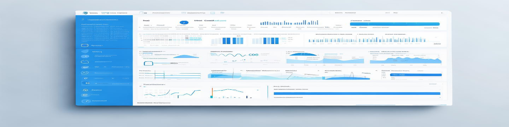
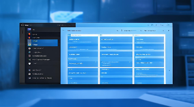
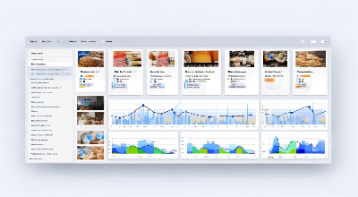
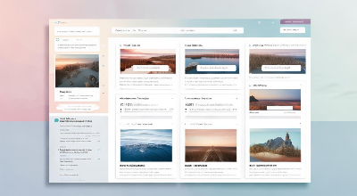
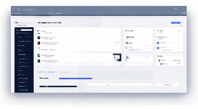
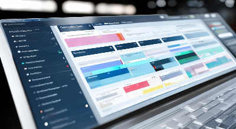
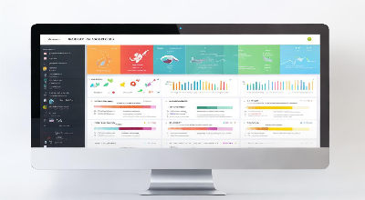
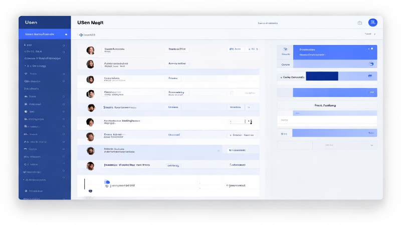

模板市场
探索高质量的应用模板，加速您的开发流程
已选：
管理后台
Vue3

企业级管理后台模板
集成用户管理、权限控制、数据看板等核心功能，快速搭建企业级应用
热门模板
查看全部

热门
用户管理系统
完整的用户管理解决方案，包含用户列表、权限配置、角色管理等功能模块
Vue3
Ant Design Vue
管理后台
2.4k 下载

新上线
电商管理平台
集成商品管理、订单处理、库存监控和销售分析的完整电商解决方案
React
Ant Design Pro
电商系统
1.8k 下载
数据分析仪表盘
多维度数据可视化，支持实时监控、趋势分析和自定义报表生成
React
ECharts
数据分析
3.1k 下载

内容管理系统
文章发布、媒体管理、栏目配置一体化内容管理解决方案
Vue3
Element Plus
内容管理
1.9k 下载
精品
物联网监控平台
实时监控物联网设备状态，数据采集与分析，异常报警处理
React
WebSocket
物联网
1.5k 下载

项目管理工具
任务管理、进度跟踪、团队协作一体化项目管理解决方案
Vue3
Ant Design Vue
团队协作
2.2k 下载

客户关系管理
客户信息管理、跟进记录、销售漏斗分析，提升客户转化率
React
Ant Design Pro
管理后台
2.8k 下载

新上线
在线教育平台
课程管理、学生进度跟踪、在线考试，构建完整教育生态
Vue3
Element Plus
教育系统
956 下载
...

用户管理系统
（246 评分）
|
2.4k 下载
|
最后更新：2023-11-15
模板介绍
用户管理系统是一个功能完备的企业级后台解决方案，专为快速构建用户管理相关应用而设计。该模板集成了用户列表管理、权限控制、角色分配、数据统计等核心功能模块，可直接用于企业内部系统或SaaS平台的用户管理模块。
系统采用前后端分离架构，前端基于Vue3和Ant Design Vue构建，代码结构清晰，组件化程度高，易于维护和扩展。模板内置了丰富的交互效果和数据可视化组件，提供了良好的用户体验。
核心功能
用户列表管理
支持用户信息的增删改查，批量操作，高级搜索和筛选
权限控制系统
基于RBAC模型的权限管理，细粒度控制菜单和操作权限
角色管理
支持自定义角色创建和权限分配，满足复杂组织架构需求
数据统计分析
用户活跃度、登录趋势等多维度数据可视化分析
操作日志
记录用户关键操作，支持日志查询和导出
消息通知
系统通知和个人消息管理，支持多种通知方式
技术栈详情
Vue3
3.2.45
JavaScript
ES6+
CSS
Tailwind CSS
Ant Design Vue
3.2.15
Vue Router
4.1.6
Axios
1.2.1
使用说明
使用流程
-
1选择模板并确认配置点击"立即使用"按钮，进入模板配置页面，可选择项目名称、技术栈版本等基础配置
-
2自定义需求参数根据业务需求，配置用户字段、权限粒度、数据模型等高级参数
-
3生成项目代码系统根据您的配置自动生成完整项目代码，通常需要1-3分钟
-
4下载并部署生成完成后，可下载代码包或直接在在线IDE中打开，根据文档进行部署
用户评价

李工程师
2023-10-28
模板非常实用，帮我们节省了大量开发时间。代码结构清晰，组件化做得很好，很容易根据业务需求进行二次开发。权限系统设计得很灵活，完全满足了我们的业务场景。
王设计师
2023-10-15
UI设计很专业，交互体验流畅。作为设计师，我特别喜欢这个模板的视觉风格和动效设计。建议增加更多的数据可视化组件选项，这样对于数据分析页面会更有帮助。
智码引擎官方
2023-10-16
感谢您的建议！我们已计划在下次更新中增加更多ECharts图表组件和数据可视化模板，敬请期待。
张总监
2023-09-30
整体来说很不错，帮我们快速搭建了内部管理系统的用户模块。权限系统设计得比较完善，但希望能增加更细粒度的API权限控制功能，目前只能控制菜单级别的权限。
模板信息
- 开发者 智码引擎官方
- 版本 2.3.0
- 发布日期 2023-08-15
- 最后更新 2023-11-15
- 适用场景 企业管理系统、SaaS平台
- 许可证 MIT
技术栈
Vue3
Ant Design Vue
JavaScript
Tailwind CSS
Vue Router
功能模块
用户列表管理
角色权限管理
数据统计分析
操作日志
消息通知
个人中心
系统设置